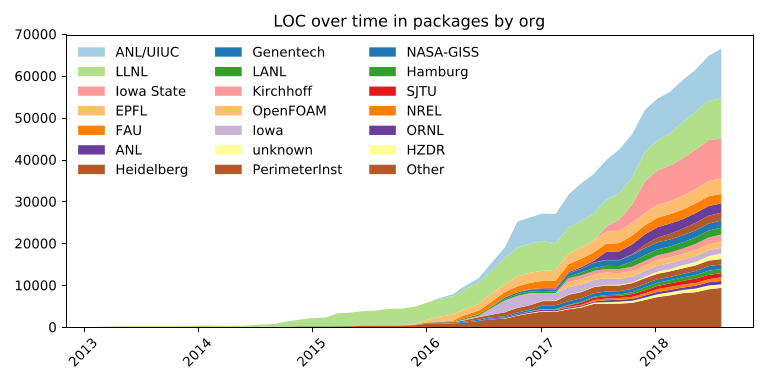

Spack is a package manager for HPC
$ # Clone a git repository (or extract a release tarball)
$ git clone https://github.com/spack/spack.git
$ # Source a setup file (optional)
$ . spack/share/spack/setup-env.sh
$ # Spack is ready to use
$ spack install hdf5
==> zlib is already installed in [...]
[...]
==> Successfully installed hdf5
Fetch: 21.62s. Build: 4m 3.15s. Total: 4m 24.77s.
[+] [...]/gcc-8.2.0/hdf5-1.10.5-n3z5wdfvv4gutcjjktb77kt7zswwp2e7
https://spack.io
Who can profit from Spack?
- End users of HPC software
- HPC application teams
- Package developers
- User support teams at HPC centers
Packages are Python classes
class Kripke(Package):
"""Kripke is a simple, scalable, 3D Sn
deterministic particle transport mini app.
"""
homepage = "https://codesign.llnl.gov/kripke.php"
url = "https://codesign.llnl.gov/kripke-1.1.tar.gz"
version('1.1', '7fe6f2b26ed983a6ce5495ab701f85bf')
version('1.0', 'f4247dde07952a5ff866b24e45b5cdd1')
variant('mpi', default=True, description='Build with MPI.')
depends_on('mpi', when="+mpi")
Easy to work with packages
$ # Create a new package in the built-in repository
$ spack create <url>
$ # Modify an existing package
$ export EDITOR='emacs -nw'
$ spack edit <package-name>
$ # Scrape for versions of an existing package
$ spack versions <package-name>
Spack is an open source project
- Lead developer: Todd Gamblin (LLNL)
- Codebase hosted on Github
- Dual license Apache-2.0 or MIT
- Want to get buy-in and PRs by HPC vendors
- Very active and engaging community
https://github.com/spack/spack
Contributions to Spack

Spack is committed to be open source
Ongoing efforts to disseminate best practices
Spack has been designed with reproducibility in mind
Installed configurations are stored in a JSON file
{
"database": {
"installs": {
"ivqu252fvh7r5iar6zwx4fmeoxiykln7": {
"explicit": true,
"installation_time": 1548272929.178339,
"ref_count": 0,
"installed": true,
"path": "/home/mculpo/PycharmProjects/spack/opt/spack/linux-ubuntu18.04-x86_64/gcc-8.2.0/zlib-1.2.11-ivqu252fvh7r5iar6zwx4fmeoxiykln7",
"spec": {
"zlib": {
"version": "1.2.11",
"arch": {
"platform": "linux",
"platform_os": "ubuntu18.04",
"target": "x86_64"
},
"compiler": {
"name": "gcc",
"version": "8.2.0"
},
"namespace": "builtin",
"parameters": {
"optimize": true,
"pic": true,
"shared": true,
"cflags": [],
"cppflags": [],
"cxxflags": [],
"fflags": [],
"ldflags": [],
"ldlibs": []
}
}
}
}
},
"version": "0.9.3"
}
}
opt/spack/.spack-db/index.json
Provenance is preserved for each configuration
$ tree $(spack location -i hdf5)/.spack
<prefix>/.spack
├── archived-files
│ └── config.log
├── build.env
├── build.out
├── repos
│ └── builtin
│ ├── packages
│ │ ├── hdf5
│ │ │ └── package.py
│ │ └── zlib
│ │ └── package.py
│ └── repo.yaml
└── spec.yaml
6 directories, 7 files
The JSON database can be regenerated based on this information
Tools are then built over the data in the DB
Check beforehand the result of concretization
$ spack spec -Il hdf5+mpi ^mpich
Input spec
--------------------------------
- hdf5+mpi
- ^mpich
Concretized
--------------------------------
- wqoi56r hdf5@1.10.4%gcc@8.2.0~cxx~debug~fortran~hl+mpi+pic+shared~szip~threadsafe arch=linux-ubuntu18.04-x86_64
- k2mhs2k ^mpich@3.3%gcc@8.2.0 device=ch3 +hydra netmod=tcp +pmi+romio~verbs arch=linux-ubuntu18.04-x86_64
- rwrp443 ^findutils@4.6.0%gcc@8.2.0 patches=84b916c0bf8c51b7e7b28417692f0ad3e7030d1f3c248ba77c42ede5c1c5d11e,bd9e4e5cc280f9753ae14956c4e4aa17fe7a210f55dd6c84aa60b12d106d47a2 arch=linux-ubuntu18.04-x86_64
- vsawnwb ^autoconf@2.69%gcc@8.2.0 arch=linux-ubuntu18.04-x86_64
[...]
[+] ivqu252 ^zlib@1.2.11%gcc@8.2.0+optimize+pic+shared arch=linux-ubuntu18.04-x86_64
Query what's installed from the command line
$ spack find zlib
==> 1 installed package
-- linux-ubuntu18.04-x86_64 / gcc@8.2.0 ----
zlib@1.2.11
$ spack find --start-date 'a month ago'
==> 3 installed packages
-- linux-ubuntu18.04-x86_64 / gcc@8.2.0 ----
hdf5@1.10.4 openblas@0.3.5 zlib@1.2.11
Uninstall anything in an easy and safe way
$ spack find zlib
==> 2 installed packages
-- linux-ubuntu18.04-x86_64 / gcc@8.2.0 ----
zlib@1.2.8 zlib@1.2.11
$ spack uninstall zlib@1.2.8
==> The following packages will be uninstalled:
-- linux-ubuntu18.04-x86_64 / gcc@8.2.0 ----
yxoie27 zlib@1.2.8%gcc+optimize+pic+shared
==> Do you want to proceed? [y/N] y
==> Successfully uninstalled zlib@1.2.8%gcc@8.2.0 [...] /yxoie27
Generate module files for HPC sites
modules:
lmod:
core_compilers:
- gcc@4.8.5
hierarchy:
- mpi
- lapack
hash_length: 0
all:
suffixes:
+mpi: mpi
+openmp: openmp
...
Tutorial: Spack 101 - module files